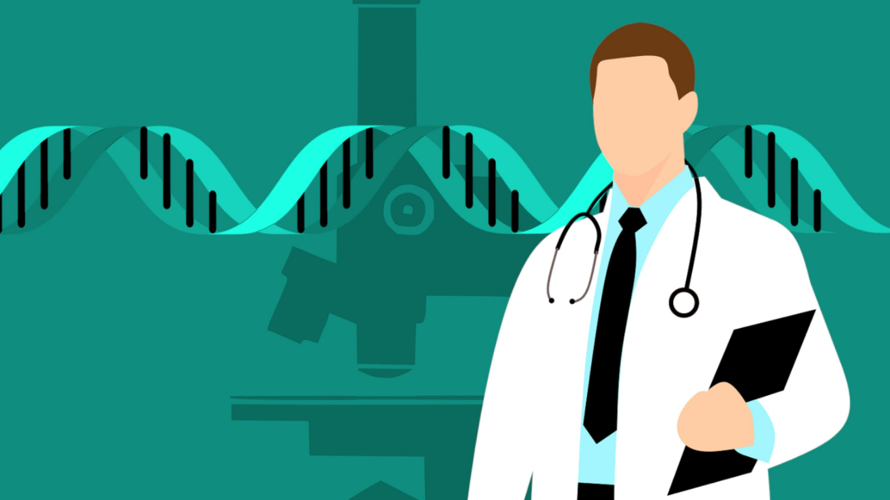

To conduct research and provide academic services in the fields of Internet, GIS, Health GIS, and Hydrologic modeling with GIS.
เนื่องจากในปัจจุบันในแต่ละหน่วยงานทั้งในภาครัฐและเอกชนรวมถึงสถาบันการศึกษาทั้งในและต่างประเทศ ต่างมีความต้องการที่จะพัฒนาเครือข่ายและระบบการสื่อสาร ทั้งแบบใช้สายและไร้สายขึ้นมาใช้งานภายในหน่วยงานของตนเอง รวมถึงนโยบายการพัฒนา เครือข่ายระดับชาติ หน่วยงาน กสทช. เพื่อพัฒนาระบบโทรศัพท์เคลื่อนที่แบบอนาคต 3.XG/4G/5G โดยมีวัตถุประสงค์เพื่อใช้ในการติดต่อสื่อสารให้ได้ระยะทางที่ไกลและครอบคลุมมากยิ่งขึ้น และเพื่อเพิ่มความสะดวก รวดรเร็ว รวมไปถึงความจุของเครือข่ายสื่อสารเพื่อให้สามารถส่งผ่านข้อมูลได้มากขึ้น เช่น สามารถดูวีดีโอ โทรทัศน์ การประชุมทางไกลด้วยวีดีโอ โดยประยุกต์ใช้ในด้านต่างๆ เช่น การศึกษา การเกษตร อุตสาหกรรม การแพทย์ สถานการณ์ภัยพิบัติ และการทหาร ผ่านระบบเครือข่ายความเร็วสูงได้ หรือแม้แต่การแลกเปลี่ยนข้อมูลกันระหว่างองค์กร รวมถึงเครือข่ายสังคมออนไลน์ นอกจากนี้เครือข่ายในปัจจุบันยังมีความเสี่ยงต่อการบุกรุกและโจมตีในรูปแบบต่างๆ ซึ่งในทุกภาคส่วนได้เล็งเห็นถึงความสำคัญของการปกป้อง หรือเพิ่มความปลอดภัยให้กับการทำธุรกรรม หรือการส่งผ่านข้อมูลในด้านต่างๆ รวมไปถึงการรักษาความเป็นส่วนตัวอีกด้วย
การใช้การวิเคราะห์ข้อมูลขนาดใหญ่เองนั้นก็จำเป็นที่จะต้องมีการประยุกต์การประมวลผลที่มีประสิทธิภาพสูง หรือแม้แต่การประมวลผลแบบขนานในรูปแบบต่างๆ รวมถึงการใช้งานบริการคลาวด์ และเวอร์ชัวร์ไรเซชัน ทั้งนี้ระบบ ซอฟต์แวร์ ฮาร์ดแวร์ และองค์ความรู้ต่างๆ ส่วนใหญ่นั้นอาศัยเทคโนโลยีและผลิตภัณฑ์จากต่างประเทศ ซึ่งมักจะมีราคาสูง รวมไปถึงการที่ไม่มีการเปิดเผยองค์ความรู้ ส่งผลให้ประเทศไทยตกอยู่ในฐานะ ผู้ซื้อ และผู้ใช้ เทคโนโลยี มากกว่าที่จะเป็น ผู้ผลิตและคิดค้นดังนั้นห้องปฏิบัติการวิจัย “มด” หรือ การสื่อสารเครือข่ายประยุกต์ จึงมีเป้าประสงค์เพื่อตอบโจทย์ข้างต้น โดยสามารถแบ่งการศึกษา พัฒนาและวิจัยออกเป็น 6 ภาคส่วนดังนี้คือ
1.การคำนวณด้วยเทคโนโลยีเคลื่อนที่และไร้สาย และโมบาย เอเจน (Mobile Computing & Mobile Agent): เป็นงานวิจัยและพัฒนาโดยมีเป้าประสงค์ในการประมวลผลหรือคำนวณ บนอุปกรณ์ขนาดเล็ก ไร้สายและเคลื่อนที่ได้ (Mobile Computing) หรือมีอยู่ทุกหนทุกแห่ง (Ubiquitous Computing) หรือแม้แต่การเชื่อมต่อเข้าของอุปกรณ์ทุกชนิดกับอินเทอร์เน็ต (Internet of Thing); เครือข่ายยานยนต์ (Vehicular Networks); เครือข่ายเซนเซอร์ไร้สาย (Wireless Sensor Networks); การติดต่อสื่อสารโดยไร้คนขับ (Unmanned Aerial Vehicle); การประยุกต์ใช้โมบาย และเอเจนเข้ากับภาคการเกษตร อุตสาหกรรม การแพทย์ และการทหาร (Agent-Based Systems for Healthcare, Agriculture, and Military); โมบายเอเยนต์และการประยุกต์ (Mobile Agent and Applications)
2.เครือข่ายไร้สายและแอดฮอก (Wireless Networking and Ad hoc Networks): เป็นการมุ่งเน้นในด้านการศึกษาวิจัยเครือข่ายไร้สายประเภทต่างๆ ตามมาตรฐาน IEEE 802.1X เช่น เครือข่ายไร้สายเฉพาะที่, เครือข่ายไร้สายส่วนบุคคล, เครือข่ายไร้สายในวงกว้าง เครือข่ายไร้สายในเมือง รวมไปถึงเซลลูลาร์ (Wireless LAN/ Wireless MAN/ WAN/ Cellular Networks) หรือแม้แต่เครือข่ายไร้สายผ่านดาวเทียมและระหว่างดาวเคราะห์ (Delay-Tolerant Networks) นอกจากนี้ยังวิจัยโครงข่ายแบบไม่คงที่ หรือเครือข่ายแอดฮอก (Ad hoc Networks) และเพียร์ทูเพียร์ (Peer-to-Peer) อีกด้วย
3.การสื่อสารเครือข่าย และอินเทอร์เน็ต (Networking and Internet): เป็นการศึกษา พัฒนาโดยมุ่งเน้นไปยังการติดต่อสื่อสารเครือข่ายคอมพิวเตอร์ เพื่อเป็นการเพิ่มประสิทธิภาพในการส่งผ่านข้อมูลในอนาคต (Future Internet); เครือข่ายที่รองรับการส่งผ่านข้อมูลมัลติมีเดีย เช่น ข้อมูล ภาพ เสียงและวีดีโอ (Multimedia Networking); การสื่อสารด้วยความเร็วสูง (High Speed Data Networks); สถาปัตยกรรมการค้นหาเส้นทางบนอินเทอร์เน็ต (Internet Routing Architecture); การปรับปรุงประสิทธิภาพของโพรโทคอลในลำดับชั้นต่างๆ (7-Layered Protocol Optimization); การบริหารจัดการและเฝ้าระวังเครือข่าย (Network Monitoring /Management); การประมวลผลบนเครือข่าย (Network Computing Optimization) และการวิเคราะห์และโมเดลข้อมูลเครือข่าย (Network Traffic Modeling and Analysis) เป็นต้น
This laboratory aims to study and research on the smart technology for high performance computing which imitates the nature-inspired behaviors.